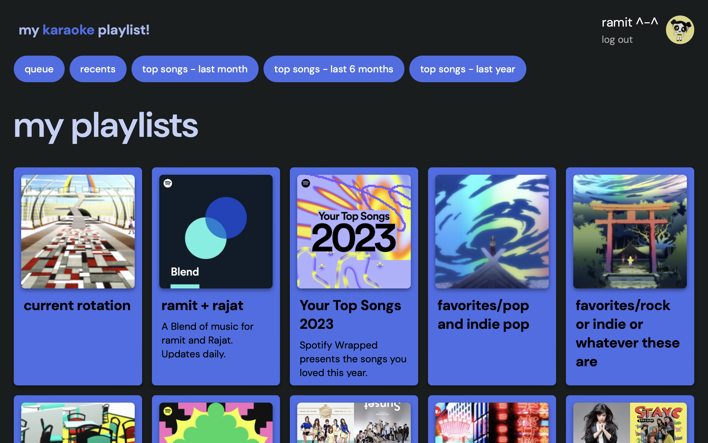
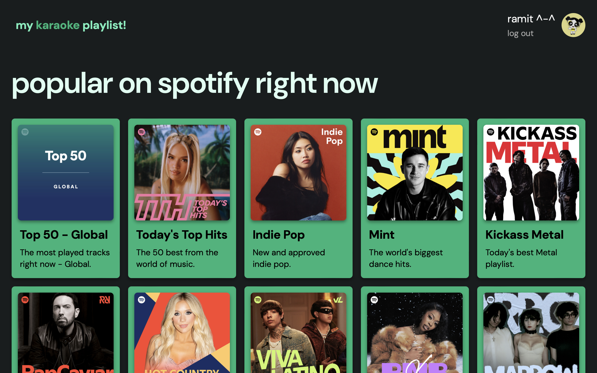
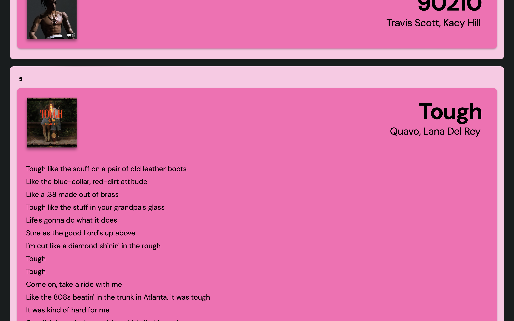
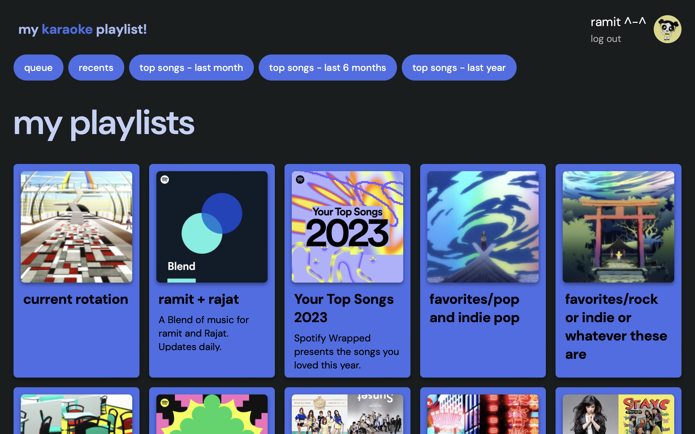
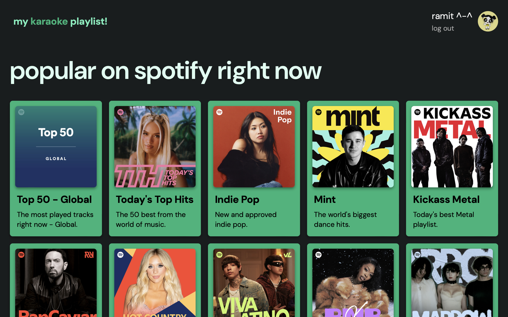
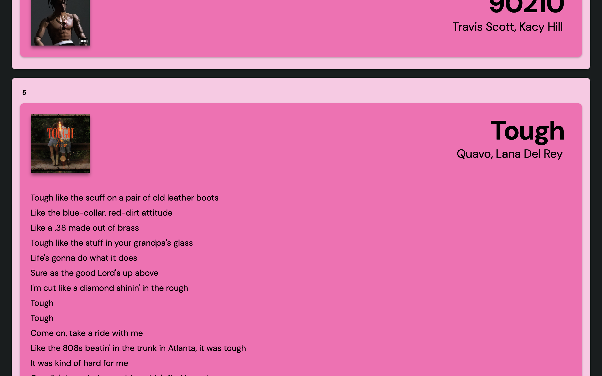

projects
my karaoke playlist!
HTML, CSS, JavaScript, React, React Router V6, Node.js, Cheerio, Spotify Web API, OAuth, CORS, http
my karaoke playlist! lets you find lyrics for your
favourite music and displays them all in one page. You can log in to Spotify to view your own playlists,
queue, recents, and top songs. Or, alternatively, you could just use Spotify's most
popular playlists without logging in :) The website is also fully responsive, so you get the
same experience regardless of what device you use.
The site uses HTML, CSS, JS, and React for the user interface, React Router V6 to implement client-side
routing,
Spotify Web API for authorization and music features, Cheerio to scrape full lyrics from Musixmatch,
and my own CORS proxy server to allow secure
API requests.
 





my album collage!
HTML, CSS, JavaScript, React, React Router V6, Node.js, HTML2Canvas, Spotify Web API, OAuth, http
my album collage! automatically creates an album art collage using your
spotify recent and top songs data with the option of shuffling and regenerating this collage.
It also lets you manually replace given images with any album
of your liking via a search function. You can select your desired
image resolution and grid size before downloading a PNG version of your collage!
The site uses HTML, CSS, JS, and React for the user interface, React Router V6
to implement client-side routing, Spotify Web API for authorization and music features,
and HTML2Canvas to allow users to download their collage as an image.


bulk save utility
HTML, CSS, JavaScript, React, React Router V6, Node.js, Spotify Web API, OAuth, http
bulk save utility provides users with a quick way to add every song in a Spotify playlist to the user's
saved songs.
I created this utility since I like dumping all the music I listen to into my saved music, but I have been
having
a hard time remembering to do that ever since Spotify removed its heart button.
other miscellaneous projects...
three.js playground
a variety of three.js shapes, effects, and sliders to allow the user to test out lighting, shadows, and positioning
sudoku in haskell
CLI Sudoku game with an in-built solver, hint-generator, and an option to load text files as custom boards
draw with fourier series!
recreates the user's drawing by computing an appropriate fourier series and graphing it
socketchat.io
online chat room made with the socket.io library with the option of creating private rooms with a unique join ID
covid-19 in spirals
visualizes Canadian provincial COVID-19 data in a spiral format
find more on
github.com